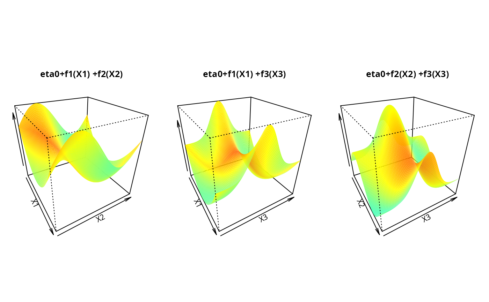

R/gamCopula-package.R
gamCopula-package.RdThis package implements inference and simulation tools to apply generalized additive models to bivariate dependence structures and vine copulas.
More details can be found in Vatter and Chavez-Demoulin (2015) and Vatter and Nagler (2016).
| Package: | gamCopula |
| Type: | Package |
| Version: | 0.0-8 |
| Date: | 2025-04-02 |
| License: | GPL-3 |
Aas, K., C. Czado, A. Frigessi, and H. Bakken (2009) Pair-copula constructions of multiple dependence. Insurance: Mathematics and Economics, 44(2), 182–198.
Brechmann, E. C., C. Czado, and K. Aas (2012) Truncated regular vines in high dimensions with applications to financial data. Canadian Journal of Statistics, 40(1), 68–85.
Dissmann, J. F., E. C. Brechmann, C. Czado, and D. Kurowicka (2013) Selecting and estimating regular vine copulae and application to financial returns. Computational Statistics & Data Analysis, 59(1), 52–69.
Vatter, T. and V. Chavez-Demoulin (2015) Generalized Additive Models for Conditional Dependence Structures. Journal of Multivariate Analysis, 141, 147–167.
Vatter, T. and T. Nagler (2016) Generalized additive models for non-simplified pair-copula constructions. https://arxiv.org/abs/1608.01593
Wood, S. N. (2004) Stable and efficient multiple smoothing parameter estimation for generalized additive models. Journal of the American Statistical Association, 99, 673–686.
Wood, S. N. (2006) Generalized Additive Models: an introduction with R. Chapman and Hall/CRC.
The present package heavily relies on the mgcv and VineCopula packages, as it basically extends and mixes both of them.
##### A gamBiCop example
require(copula)
require(mgcv)
set.seed(0)
## Simulation parameters (sample size, correlation between covariates,
## Gaussian copula family)
n <- 5e2
rho <- 0.5
fam <- 1
### A calibration surface depending on three variables
eta0 <- 1
calib.surf <- list(
calib.quad <- function(t, Ti = 0, Tf = 1, b = 8) {
Tm <- (Tf - Ti) / 2
a <- -(b / 3) * (Tf^2 - 3 * Tf * Tm + 3 * Tm^2)
return(a + b * (t - Tm)^2)
},
calib.sin <- function(t, Ti = 0, Tf = 1, b = 1, f = 1) {
a <- b * (1 - 2 * Tf * pi / (f * Tf * pi +
cos(2 * f * pi * (Tf - Ti))
- cos(2 * f * pi * Ti)))
return((a + b) / 2 + (b - a) * sin(2 * f * pi * (t - Ti)) / 2)
},
calib.exp <- function(t, Ti = 0, Tf = 1, b = 2, s = Tf / 8) {
Tm <- (Tf - Ti) / 2
a <- (b * s * sqrt(2 * pi) / Tf) * (pnorm(0, Tm, s) - pnorm(Tf, Tm, s))
return(a + b * exp(-(t - Tm)^2 / (2 * s^2)))
}
)
### Display the calibration surface
par(mfrow = c(1, 3), pty = "s", mar = c(1, 1, 4, 1))
u <- seq(0, 1, length.out = 100)
sel <- matrix(c(1, 1, 2, 2, 3, 3), ncol = 2)
jet.colors <- colorRamp(c(
"#00007F", "blue", "#007FFF", "cyan", "#7FFF7F",
"yellow", "#FF7F00", "red", "#7F0000"
))
jet <- function(x) {
rgb(jet.colors(exp(x / 3) / (1 + exp(x / 3))),
maxColorValue = 255
)
}
for (k in 1:3) {
tmp <- outer(u, u, function(x, y) {
eta0 + calib.surf[[sel[k, 1]]](x) + calib.surf[[sel[k, 2]]](y)
})
persp(u, u, tmp,
border = NA, theta = 60, phi = 30, zlab = "",
col = matrix(jet(tmp), nrow = 100),
xlab = paste("X", sel[k, 1], sep = ""),
ylab = paste("X", sel[k, 2], sep = ""),
main = paste("eta0+f", sel[k, 1],
"(X", sel[k, 1], ") +f", sel[k, 2],
"(X", sel[k, 2], ")",
sep = ""
)
)
}

### 3-dimensional matrix X of covariates
covariates.distr <- mvdc(normalCopula(rho, dim = 3),
c("unif"), list(list(min = 0, max = 1)),
marginsIdentical = TRUE
)
X <- rMvdc(n, covariates.distr)
### U in [0,1]x[0,1] with copula parameter depending on X
U <- condBiCopSim(fam, function(x1, x2, x3) {
eta0 + sum(mapply(function(f, x) {
f(x)
}, calib.surf, c(x1, x2, x3)))
}, X[, 1:3], par2 = 6, return.par = TRUE)
### Merge U and X
data <- data.frame(U$data, X)
names(data) <- c(paste("u", 1:2, sep = ""), paste("x", 1:3, sep = ""))
### Display the data
dev.off()
#> null device
#> 1
plot(data[, "u1"], data[, "u2"], xlab = "U1", ylab = "U2")
### Model fit with a basis size (arguably) too small
### and unpenalized cubic spines
pen <- FALSE
basis0 <- c(3, 4, 4)
formula <- ~ s(x1, k = basis0[1], bs = "cr", fx = !pen) +
s(x2, k = basis0[2], bs = "cr", fx = !pen) +
s(x3, k = basis0[3], bs = "cr", fx = !pen)
system.time(fit0 <- gamBiCopFit(data, formula, fam))
#> user system elapsed
#> 0.097 0.000 0.097
### Model fit with a better basis size and penalized cubic splines (via min GCV)
pen <- TRUE
basis1 <- c(3, 10, 10)
formula <- ~ s(x1, k = basis1[1], bs = "cr", fx = !pen) +
s(x2, k = basis1[2], bs = "cr", fx = !pen) +
s(x3, k = basis1[3], bs = "cr", fx = !pen)
system.time(fit1 <- gamBiCopFit(data, formula, fam))
#> user system elapsed
#> 0.456 1.535 0.358
### Extract the gamBiCop objects and show various methods
(res <- sapply(list(fit0, fit1), function(fit) {
fit$res
}))
#> [[1]]
#> Gaussian copula with tau(z) = (exp(z)-1)/(exp(z)+1) where
#> z ~ s(x1, k = basis0[1], bs = "cr", fx = !pen) + s(x2, k = basis0[2],
#> bs = "cr", fx = !pen) + s(x3, k = basis0[3], bs = "cr", fx = !pen)
#>
#> [[2]]
#> Gaussian copula with tau(z) = (exp(z)-1)/(exp(z)+1) where
#> z ~ s(x1, k = basis1[1], bs = "cr", fx = !pen) + s(x2, k = basis1[2],
#> bs = "cr", fx = !pen) + s(x3, k = basis1[3], bs = "cr", fx = !pen)
#>
metds <- list("logLik" = logLik, "AIC" = AIC, "BIC" = BIC, "EDF" = EDF)
lapply(res, function(x) sapply(metds, function(f) f(x)))
#> [[1]]
#> [[1]]$logLik
#> 'log Lik.' 266.8974 (df=9)
#>
#> [[1]]$AIC
#> [1] -515.7948
#>
#> [[1]]$BIC
#> [1] -477.8633
#>
#> [[1]]$EDF
#> [1] 1 2 3 3
#>
#>
#> [[2]]
#> [[2]]$logLik
#> 'log Lik.' 302.9581 (df=16.24202)
#>
#> [[2]]$AIC
#> [1] -573.4321
#>
#> [[2]]$BIC
#> [1] -504.9783
#>
#> [[2]]$EDF
#> [1] 1.000000 1.999178 7.577543 5.665301
#>
#>
### Comparison between fitted, true smooth and spline approximation for each
### true smooth function for the two basis sizes
fitted <- lapply(res, function(x) {
gamBiCopPredict(x, data.frame(x1 = u, x2 = u, x3 = u),
type = "terms"
)$calib
})
true <- vector("list", 3)
for (i in 1:3) {
y <- eta0 + calib.surf[[i]](u)
true[[i]]$true <- y - eta0
temp <- gam(y ~ s(u, k = basis0[i], bs = "cr", fx = TRUE))
true[[i]]$approx <- predict.gam(temp, type = "terms")
temp <- gam(y ~ s(u, k = basis1[i], bs = "cr", fx = FALSE))
true[[i]]$approx2 <- predict.gam(temp, type = "terms")
}
### Display results
par(mfrow = c(1, 3), pty = "s")
yy <- range(true, fitted)
yy[1] <- yy[1] * 1.5
for (k in 1:3) {
plot(u, true[[k]]$true,
type = "l", ylim = yy,
xlab = paste("Covariate", k), ylab = paste("Smooth", k)
)
lines(u, true[[k]]$approx, col = "red", lty = 2)
lines(u, fitted[[1]][, k], col = "red")
lines(u, fitted[[2]][, k], col = "green")
lines(u, true[[k]]$approx2, col = "green", lty = 2)
legend("bottomleft",
cex = 0.6, lty = c(1, 1, 2, 1, 2),
c("True", "Fitted", "Appox 1", "Fitted 2", "Approx 2"),
col = c("black", "red", "red", "green", "green")
)
}
###### A gamVine example
set.seed(0)
### Simulation parameters
## Sample size
n <- 1e3
## Copula families
familyset <- c(1:2, 301:304, 401:404)
## Define a 4-dimensional R-vine tree structure matrix
d <- 4
Matrix <- c(2, 3, 4, 1, 0, 3, 4, 1, 0, 0, 4, 1, 0, 0, 0, 1)
Matrix <- matrix(Matrix, d, d)
nnames <- paste("X", 1:d, sep = "")
### A function factory
eta0 <- 1
calib.surf <- list(
calib.quad <- function(t, Ti = 0, Tf = 1, b = 8) {
Tm <- (Tf - Ti) / 2
a <- -(b / 3) * (Tf^2 - 3 * Tf * Tm + 3 * Tm^2)
return(a + b * (t - Tm)^2)
},
calib.sin <- function(t, Ti = 0, Tf = 1, b = 1, f = 1) {
a <- b * (1 - 2 * Tf * pi / (f * Tf * pi +
cos(2 * f * pi * (Tf - Ti))
- cos(2 * f * pi * Ti)))
return((a + b) / 2 + (b - a) * sin(2 * f * pi * (t - Ti)) / 2)
},
calib.exp <- function(t, Ti = 0, Tf = 1, b = 2, s = Tf / 8) {
Tm <- (Tf - Ti) / 2
a <- (b * s * sqrt(2 * pi) / Tf) * (pnorm(0, Tm, s) - pnorm(Tf, Tm, s))
return(a + b * exp(-(t - Tm)^2 / (2 * s^2)))
}
)
### Create the model
## Define gam-vine model list
count <- 1
model <- vector(mode = "list", length = d * (d - 1) / 2)
sel <- seq(d, d^2 - d, by = d)
## First tree
for (i in 1:(d - 1)) {
# Select a copula family
family <- sample(familyset, 1)
model[[count]]$family <- family
# Use the canonical link and a randomly generated parameter
if (is.element(family, c(1, 2))) {
model[[count]]$par <- tanh(rnorm(1) / 2)
if (family == 2) {
model[[count]]$par2 <- 2 + exp(rnorm(1))
}
} else {
if (is.element(family, c(401:404))) {
rr <- rnorm(1)
model[[count]]$par <- sign(rr) * (1 + abs(rr))
} else {
model[[count]]$par <- rnorm(1)
}
model[[count]]$par2 <- 0
}
count <- count + 1
}
## A dummy dataset
data <- data.frame(u1 = runif(1e2), u2 = runif(1e2), matrix(runif(1e2 * d), 1e2, d))
## Trees 2 to (d-1)
for (j in 2:(d - 1)) {
for (i in 1:(d - j)) {
# Select a copula family
family <- sample(familyset, 1)
# Select the conditiong set and create a model formula
cond <- nnames[sort(Matrix[(d - j + 2):d, i])]
tmpform <- paste("~", paste(paste("s(", cond, ", k=10, bs='cr')",
sep = ""
), collapse = " + "))
l <- length(cond)
temp <- sample(3, l, replace = TRUE)
# Spline approximation of the true function
m <- 1e2
x <- matrix(seq(0, 1, length.out = m), nrow = m, ncol = 1)
if (l != 1) {
tmp.fct <- paste("function(x){eta0+",
paste(sapply(1:l, function(x) {
paste("calib.surf[[", temp[x], "]](x[", x, "])",
sep = ""
)
}), collapse = "+"), "}",
sep = ""
)
tmp.fct <- eval(parse(text = tmp.fct))
x <- eval(parse(text = paste0("expand.grid(",
paste0(rep("x", l), collapse = ","), ")",
collapse = ""
)))
y <- apply(x, 1, tmp.fct)
} else {
tmp.fct <- function(x) eta0 + calib.surf[[temp]](x)
colnames(x) <- cond
y <- tmp.fct(x)
}
# Estimate the gam model
form <- as.formula(paste0("y", tmpform))
dd <- data.frame(y, x)
names(dd) <- c("y", cond)
b <- gam(form, data = dd)
# plot(x[,1],(y-fitted(b))/y)
# Create a dummy gamBiCop object
tmp <- gamBiCopFit(data = data, formula = form, family = 1, n.iters = 1)$res
# Update the copula family and the model coefficients
attr(tmp, "model")$coefficients <- coefficients(b)
attr(tmp, "model")$smooth <- b$smooth
attr(tmp, "family") <- family
if (family == 2) {
attr(tmp, "par2") <- 2 + exp(rnorm(1))
}
model[[count]] <- tmp
count <- count + 1
}
}
## Create the gamVineCopula object
GVC <- gamVine(Matrix = Matrix, model = model, names = nnames)
print(GVC)
#> GAM-Vine matrix:
#> [,1] [,2] [,3] [,4]
#> [1,] 2 0 0 0
#> [2,] 3 3 0 0
#> [3,] 4 4 4 0
#> [4,] 1 1 1 1
#>
#> Where
#> 1 <-> X1
#> 2 <-> X2
#> 3 <-> X3
#> 4 <-> X4
#>
#> Tree 1:
#> X2,X1: Gumbel type 3 (survival and 90 degrees rotated)
#> X3,X1: Gaussian
#> X4,X1: Gumbel type 1 (standard and 90 degrees rotated)
#>
#> Tree 2:
#> X2,X4|X1 : Gumbel type 1 (standard and 90 degrees rotated) copula with tau(z) = (exp(z)-1)/(exp(z)+1) where
#> z ~ s(X1, k = 10, bs = "cr")
#> X3,X4|X1 : Gumbel type 2 (standard and 270 degrees rotated) copula with tau(z) = (exp(z)-1)/(exp(z)+1) where
#> z ~ s(X1, k = 10, bs = "cr")
#>
#> Tree 3:
#> X2,X3|X4,X1 : Gumbel type 4 (survival and 270 degrees rotated) copula with tau(z) = (exp(z)-1)/(exp(z)+1) where
#> z ~ s(X1, k = 10, bs = "cr") + s(X4, k = 10, bs = "cr")
#
if (FALSE) { # \dontrun{
### Simulate and fit the model
sim <- gamVineSimulate(n, GVC)
fitGVC <- gamVineSeqFit(sim, GVC, verbose = TRUE)
fitGVC2 <- gamVineCopSelect(sim, Matrix, verbose = TRUE)
### Plot the results
par(mfrow = c(3, 4))
plot(GVC, ylim = c(-2.5, 2.5))
plot(fitGVC, ylim = c(-2.5, 2.5))
plot(fitGVC2, ylim = c(-2.5, 2.5))
} # }